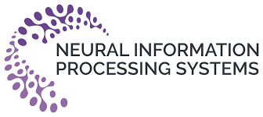
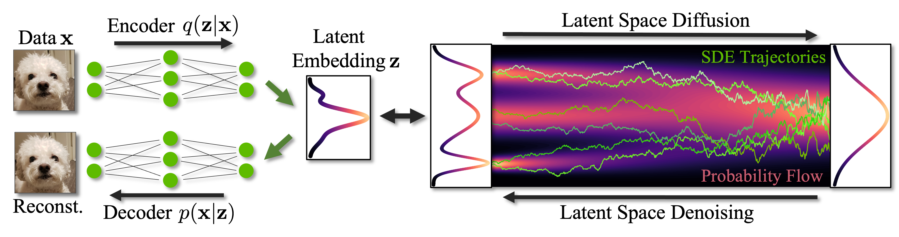

NeurIPS 2023 Tutorial:
Latent Diffusion Models:
Is the Generative AI Revolution Happening in Latent Space?
Date: Monday, December 11, 2023, New Orleans


Overview
Diffusion models have emerged as a powerful class of generative models and demonstrated astonishing results, in particular in image synthesis. However, training high-resolution diffusion models in pixel space can be highly expensive. Overcoming these limitations, Latent Diffusion Models (LDMs) first map high-resolution data into a compressed, typically lower-dimensional latent space using an autoencoder, and then train a diffusion model in that latent space more efficiently. Thereby, LDMs enable high-quality image synthesis while avoiding excessive compute demands. Furthermore, the LDM paradigm with an autoencoder that can be tailored to specific problems and data and a separate diffusion model in latent space offers significant flexibility with respect to architecture and model design. This has allowed LDMs to be successfully extended to various tasks beyond image generation, such as video synthesis, 3D object and scene generation, languange modeling, and more. Most prominently, the well-known text-to-image model Stable Diffusion leverages the LDM framework. LDMs have become very popular and widely used in the generative modeling literature.
In this tutorial, we aim to provide an introduction to LDMs. While the literature on diffusion models has become broad, the LDM paradigm stands out as a particularly powerful approach due to its flexibility and excellent trade-off with respect to performance and compute demands. We aim to present a tutorial on LDMs that will benefit researchers interested in efficient and flexible, yet expressive generative modeling frameworks. We will also highlight advanced techniques for accelerated sampling and controllability, and discuss various applications of LDMs beyond image synthesis. Moreover, a panel discussion will provide diverse perspectives on this dynamic field and offer an outlook for future research on LDMs.
Speakers
Schedule
| Title | Speaker | Duration |
|---|---|---|
| Part (1): Introduction to Latent Diffusion Models Diffusion models, autoencoding, compression, latent diffusion, architectures, image generation |
Karsten Kreis | 40 minutes |
| Part (2): Advanced Design and Controllability End-to-end training, maximum likelihood, accelerated sampling, distillation, control and editing |
Arash Vahdat | 40 minutes |
| Part (3): Latent Diffusion Models beyond Image Generation Video generation, 3D object and scene synthesis, segmentation, language & molecule generation |
Ruiqi Gao | 40 minutes |
| Part (4): Panel Discussion | 30 minutes |
Panelists
Google Deepmind
Weizmann Institute of Science
Stability AI
Stanford University
University of California, Los Angeles
About Us
Karsten Kreis is a senior research scientist at NVIDIA's Toronto AI Lab. Prior to NVIDIA, he worked at D-Wave Systems and co-founded Variational AI, a startup utilizing generative models for drug discovery. Karsten is trained as a physicist and did his Ph.D. at the Max Planck Institute for Polymer Research. Currently, Karsten’s research focuses on developing novel generative learning methods, and on applying deep generative models in areas such as computer vision, graphics and digital artistry, as well as in the natural sciences. Karsten has worked on diffusion models and latent diffusion models for image, video, texture, geometry, and 3D scene synthesis.
Ruiqi Gao is a research scientist at Google Deepmind. Her research interests are in statistical modeling and learning, with a focus on generative models and representation learning. She received her Ph.D. degree in statistics from the University of California, Los Angeles (UCLA) in 2021 advised by Song-Chun Zhu and Ying Nian Wu. Her recent research themes include scalable training and inference algorithms of deep generative models, and their applications in computer vision, natural language processing and neuroscience. Ruiqi has worked on diffusion models and latent diffusion models for image and video generation.
Arash Vahdat is a senior research manager at NVIDIA Research where he leads the generative AI team. Before NVIDIA, he was a researcher at D-Wave Systems, working on generative learning and its applications in label-efficient training. Before D-Wave, Arash was a research faculty member at Simon Fraser University, where he led computer vision research and taught master courses on machine learning for big data. Arash's current research areas include generative learning, representation learning, and efficient learning. Arash has worked on latent diffusion models for images, text, 3D data, semantic segmentation, and inverse problems.